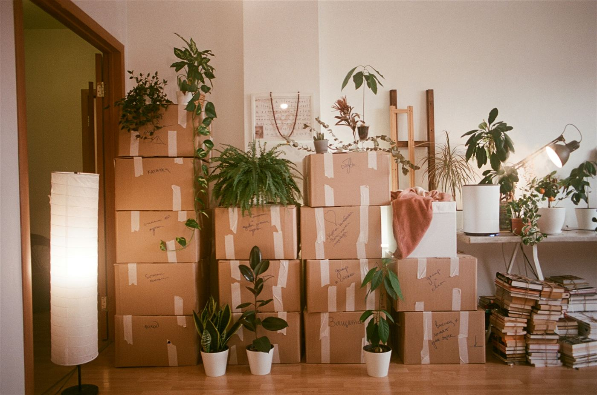

遺品整理業者の選び方｜
料金相場と悪徳業者を見抜くポイント
遺品整理は、家族を見送った直後の、心身ともに負担が大きい時期に向き合うことになる作業です。業者選びを誤ると、高額請求や不法投棄といったトラブルに発展することもあります。必要な許可・資格、料金相場、悪徳業者を見抜くポイントを解説します。

- 遺品整理業者に必要な許可・資格
- 料金相場と、見積もりで確認すべきポイント
- 悪徳業者を見抜くチェックポイント
遺品整理業者に必要な許可・資格
遺品整理業そのものに特別な免許は必要ありませんが、実際の作業には次のような許可が関わってきます。依頼先を選ぶ際は、まずこれらの有無を確認することが第一歩です。
| 許可・資格 | 内容 |
|---|---|
| 一般廃棄物収集運搬業許可 | 家庭から出た不用品（一般廃棄物）を収集・運搬するために必須。自治体ごとに交付され、これがない業者は不法投棄のリスクがある |
| 古物商許可 | 着物や骨董品、貴金属などを買い取る場合に必要。この許可がない業者は買取サービスを適法に行えない |
| 遺品整理士（民間資格） | 一般社団法人遺品整理士認定協会が認定。廃棄物処理法の知識や遺族への配慮などを学んだ担当者が取得 |
特に注意したいのは「産業廃棄物収集運搬業許可」との違いです。これは事業所から出るごみが対象で、家庭の遺品には使えません。「一般廃棄物収集運搬業許可」を持っているかを、自治体のホームページなどで事前に確認しておきましょう。
遺品整理の料金相場
| 間取り | 費用の目安 |
|---|---|
| 1R・1K | 3万〜8万円程度 |
| 1DK・2K | 6万〜15万円程度 |
| 2LDK・3K | 12万〜30万円程度 |
| 3LDK以上 | 25万〜50万円程度 |
荷物の量や建物の階数、エレベーターの有無、特殊清掃が必要かどうかによって金額は大きく変動します。相場はあくまで目安として捉え、複数社から見積もりを取って比較することが大切です。
優良な業者を見分けるチェックポイント
- 一般廃棄物収集運搬業許可・古物商許可の証明書を提示できる
- 見積もりを訪問のうえ無料で行い、内訳を明確な書面で提示する
- 「一式◯万円」のような曖昧な見積もりではなく、作業内容ごとの内訳がある
- 契約書やキャンセルポリシーを事前に説明してくれる
- 遺品整理士認定協会などの第三者機関による認定を受けている
- スタッフの対応が丁寧で、遺族への配慮が感じられる
よくあるトラブル事例
- 見積もりより高額な追加請求をされる。「搬出時に荷物が想定より多かった」などの理由で、当日になって金額が跳ね上がるケースがあります。
- 「残してほしい」と伝えていた物まで処分される。形見や写真、手紙などが、確認不足のまま処分されてしまうことがあります。
- 回収した遺品が不法投棄される。一般廃棄物収集運搬業許可を持たない業者に依頼すると、不適切な処分のリスクが高まります。発覚した場合、依頼者側に行政から確認の連絡が入ることもあります。
- 貴重品が紛失・盗難に遭う。作業に立ち会わなかった場合に起きやすいトラブルです。現金や貴金属は、作業前に自分で回収しておくことが基本です。
依頼する前に準備しておきたいこと
- 貴重品を先に回収する
現金・通帳・印鑑・貴金属・重要書類は、作業前に自分たちで探し出しておきます。 - 残す物・処分する物を仕分けておく
形見にしたい品や写真などは、事前にスタッフ全員に伝えておくとトラブルを防げます。 - 複数社から相見積もりを取る
最低でも2〜3社を比較し、極端に安い見積もりには注意します。 - 許可証・資格を確認する
一般廃棄物収集運搬業許可、古物商許可の有無を、契約前に必ず確認します。 - 作業当日は可能な限り立ち会う
立ち会えない場合は、事前に写真や動画で室内の状態を記録しておくと安心です。
遺品整理は、実家じまい・相続手続きとつながっている
遺品整理は単独の作業ではなく、実家じまいや相続登記、公共料金の解約といった一連の手続きの一部です。荷物の片付けだけを先に終えても、名義変更や不動産の扱いが決まっていなければ、家はそのまま空き家になってしまいます。
「まず何から手をつければいいのか」を整理せずに遺品整理業者を探し始めると、全体像が見えないまま個別の作業だけが進んでしまうことがあります。
おやこと｜業者選びを含めた「進め方」も一緒に整理する
「おやこと」は、ご遺族からの依頼を受けて、遺族だけでは対応が難しいことの一部をサポートするサービスです。遺品整理も含めて、亡くなった日を基準に「何を・いつまでに」進めるべきかをタスクとして整理し、必要に応じて信頼できる業者選びの相談にも対応します。
遺品整理そのものを代行するのではなく、進め方や業者選びで迷わないように、遺族に伴走することがおやことの役割です。
よくある質問
遺品整理は自分たちだけで行うこともできますか？
荷物が少なく、時間や体力に余裕があれば可能です。ただし、大型家具の搬出や特殊清掃が必要な場合、遠方に住んでいて時間が取れない場合などは、業者に依頼したほうが結果的に負担を抑えられることが多いです。
見積もりが極端に安い業者は、避けたほうがいいですか？
注意が必要です。相場より大幅に安い見積もりは、後から高額な追加請求をされたり、不用品が不法投棄されたりするリスクのサインになることがあります。内訳が明確な見積書を出してくれるかを確認しましょう。
遺品整理と一緒に、家財の買取もお願いできますか？
古物商許可を持つ業者であれば可能です。着物や骨董品、貴金属などは、買取によって処分費用を抑えられることもあります。許可の有無を事前に確認しておきましょう。
遺品整理の途中でトラブルに遭った場合、どこに相談すればいいですか？
消費者ホットライン「188」に相談できます。契約書や見積書、やり取りの記録などの証拠を残しておくと、相談がスムーズに進みます。
遺品整理はいつまでに終わらせる必要がありますか？
法律上の期限はありません。ただし、賃貸住宅の場合は契約の解約期限、実家の場合は相続登記や空き家対策の観点から、なるべく早めに着手したほうが後の負担が軽くなります。
まとめ｜業者選びは、許可・見積もり・立ち会いの3点で判断する
遺品整理業者を選ぶときは、一般廃棄物収集運搬業許可などの必要な許可を持っているか、見積もりの内訳が明確か、そして可能な限り作業に立ち会えるかの3点を確認することが基本です。焦って一社だけで決めず、複数社を比較する時間を確保しましょう。
「おやこと」は、ご遺族からの依頼を受けて、遺族だけでは対応が難しいことの一部をサポートするサービスです。遺品整理を含む死後の手続きを、亡くなった日を基準にしたタスクとして整理し、業者選びで迷ったときの相談先としてもお使いいただけます。